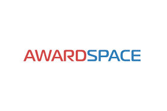
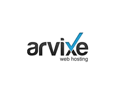

PLATAFORMAS DE ALOJAMIENTO/HOSTING
PLATAFORMAS DE ALOJAMIENTO/HOSTING GRATUITAS
1. FreeHosting Hosting web gratuito y flexible
FreeHosting se destaca por la gran cantidad de funciones incluidas de forma gratuita. Con cientos de aplicaciones como WordPress y Joomla disponibles para la instalacion con un solo clic y mas funciones tecnicas como la gestion de Apache / PHP7, FreeHosting te ofrece funciones premium a un costo cero.
A diferencia de muchos proveedores de alojamiento web gratuito, FreeHosting no te brinda un subdominio (por ejemplo, freehosting.com/tunombredeusuario). Esto tiene ventajas y desventajas. Tu web sera mas profesional con tu propio nombre de dominio, pero nuevamente, los nombres de dominio cuestan dinero.
Que obtienes con la version gratuita?
FreeHosting es una de las opciones de hosting gratuito con mas funciones en nuestro escaparate. Lo que este incluido en tu plan gratuito es:
- Ancho de banda ilimitado. Aunque FreeHosting te pide que cumplas con su Polatica de Uso Justo, este es un procedimiento bastante estandar con los hosts web que ofrecen ancho de banda iilimitado, y en realidad hay muy pocas restricciones.
- 10 GB de almacenamiento en disco. Esta es una gran cantidad de espacio en disco (10 veces lo que ofrece 000webhost).
- Autoinstalador de software. Obtienes acceso a mas de 480 aplicaciones web que pueden instalarse en tu sitio web en un instante. Esto es casi 10 veces el numero de aplicaciones que ofrece 000webhost.
- Una cuenta de email. Obtienes una sola direccion de correo electronico tu@tudominio.com incluida, con la opcion de comprar mas direcciones de correo electronico como complemento. El control de correo no deseado y la entrega garantizada tambien se incluyen con la direccion de correo electronico gratuita.

2. GoogieHost a 100% basado en la nube para un mejor rendimiento
Si estas buscando una solucion de hosting web gratuita que puedas ofrecer velocidades rapidas, GoogieHost ofrece alojamiento en Linux para una mejor velocidad y estabilidad. Para mejorar aun mas tu rendimiento, cuando te registres, puedes agregar el Cloudflare CDN (red de entrega de contenido) a tu web de forma gratuita.
Al igual que 000webhost, GoogieHost usa subdominios para hosting web gratuito, pero puedes comprar tu propio dominio para crear una apariencia mas profesional. Si decides ir con el subdominio, puedes elegir entre dos dominios diferentes: examplesubdomain.cu.ma o examplesubdomain.thats.im.
Lo que obtienes con la version gratuita
GoogieHost incluye muchas caracteristicas en su plan gratuito. Obtienes:
- Soporte de asistencia al cliente. Si bien la mayoria de los hosts gratuitos no ofrecen soporte al cliente a los usuarios gratuitos, el equipo de soporte de GoogieHost estar encantado de ayudarte a resolver cualquier problema que tengas.
- 1 GB de almacenamiento SSD. Mas rapido y estable que el almacenamiento HDD tradicional, el almacenamiento SSD puede aumentar aun mas la velocidad y el rendimiento de tu web.
- Ancho de banda ilimitado. No hay limite para la cantidad de trafico que puedes recibir, y GoogieHost tambien incluye un enlace ascendente de 100MBPS, por lo que tu sitio web puede manejar facilmente a muchos visitantes a la vez.
- Correos electronicos gratuitos de negocios. Crea una direccion de email profesional para tus negocios con el fin de dar una buena impresion a tus clientes.
- Autoinstalador de software. Agrega aplicaciones como WordPress rapida y facilmente a tu web. Obtienes acceso a mas de 300 aplicaciones diferentes con este instalador.
- SSL gratuito. Tu web esta protegida automaticamente por el certificado SSL de GoogieHost.
3. 5GB gratis a Servidores con sede en EEUU de alta calidad
5GB Free funciona segun el principio de que, si bien necesitas un hosting gratuito para comenzar, llegar a un punto (en un futuro no muy lejano) en el que deberas cambiar a un plan de pago.
Si bien no ofrece tanto como algunos de los otros hosts gratuitos en nuestra lista, 5GB Free tiene la ventaja de estar en EEUU y tener los mismos servidores de alta calidad que los proveedores de hosting premium.
Lo que obtienes con la version gratuita
La lista de funciones de 5GB Free tiene lo basico para poner tu web online de manera rapida y facil. Obtienes:
- Espacio en disco de 5GB. Eso es 5 veces mas espacio en el disco que el que obtienes con 000webhost o GoogieHost y, a menos que estas creando un sitio web rico en multimedia, la limitacion no deberia ser un problema.
- 20 GB de ancho de banda. En comparacion con las ofertas de ancho de banda ilimitado en GoogieHost y FreeHosting, 20GB parece poco, pero si solo estas creando un blog regular o una web comercial, y no esperas grandes cantidades de trafico, deberia ser suficiente.
- Instalador automatico Installatron. Este instalador automatico te permite instalar aplicaciones como WordPress y muchas otras. Hay mas de 150 aplicaciones disponibles.
- PHP y MySQL. Obtienes tres bases de datos MySQL con cuentas gratuitas de 5GB.
4. AwardSpace a Agrega sitios web extra a tu espacio de hosting
If you want to host more than one website, AwardSpace te ofrece la opcion de alojar un total de cuatro sitios web gratuitos, tres de los cuales seran subdominios. Esto te da la opcion de alojar webs para tus amigos, familia o clientes.
Con un plan gratuito de AwardSpace, te beneficias de la proteccion automatica de un cortafuegos que mantiene tu web a salvo de ataques malintencionados. AwardSpace se toma la seguridad en serio, pero para un certificado SSL, debes pasarte a un plan de pago.
Lo que obtienes con la version gratuita
- Espacio en disco de 1GB. Al igual que ocurre con 000webHost y GoogieHost, obtienes suficiente espacio en el disco para crear una web de excelente apariencia. Con 1GB puedes almacenar unas 600 imagenes, pero no es tan bueno para archivos de video grandes.
- Trafico mensual de 5GB. Este es el minimo de ancho de banda que se ofrece en nuestra lista, pero deberra ser suficiente para webs y blogs simples.
- Una cuenta de email. Tu cuenta de email gratuita viene con proteccion de virus SpamAssasin y ClamAV
- Instalacion CMS. Aunque AwardSpace usa el instalador de aplicaciones de Zacky, con el plan gratuito solo puedes instalar una de las tres opciones de CMS: WordPress, Joomla o Crav.
- Subdominios. Puedes añadir hasta tres subdominios a tu espacio de hosting.

PLATAFORMAS DE ALOJAMIENTO/HOSTING DE PAGO
1. Webempresa
Webempresa es uno de los hostings españoles con mas recomendaciones y buenas opiniones. Nosotros no podemos negarlo y damos fe ya que es el hosting en el que tenemos alojada esta web y otros proyectos como Marketin.tv, Web y Contenidos, empleomarketing Destacan por su calidad en el servicio y atencion de incidencias, ofreciendo una respuesta y solucion inmediata. La velocidad es increible, algo de lo que ninguna te hablar y dificilmente puedes comparar un hosting con otro sin probarlos.
Plan: Popular
Precio: 99,00/ao
Espacio en disco: 1 GB
Trafico mensual: 60 GB
Dominios: ilimitados
2. Bana Hosting
Podria ser considerada como hosting alow costo o de bajo coste ya que dispone de planes de precios bastante asequibles para las prestaciones que ofrecen.
Las opiniones de los usuarios son positivas, tanto en velocidad del servidor como en el soporte tecnico (es en Español).
Plan: Profesional Deluxe
Precio: 66,26/ao
Espacio en disco: ilimitado
Trafico mensual: ilimitado
Dominios: ilimitados
3. Raiola Networks
Empresa española que ofrece alojamientos de hosting de calidad a precios asequibles.
Se han centrado en ofrecer buenos precios y servicios a clientes como agencias y reseller.
Estan especializados en WordPress
Plan: Base
Precio: 54,45/ao
Espacio en disco: 10 GB
Trafico mensual: 80 GB
Dominios: 3
4. Arvixe
Empresa fundada en el año 2003 y ubicada en USA. Ofrece servicio de asistencia tecnica en Ingles.
Dispones de planes personalizados para sistema operativo Windows y Linux y todos ellos incorporan un vale de 100$ para aplicar en campañas publicitarias en Google Adwords.
Plan: Personal Class
Precio: 63,40/ao
Espacio en disco: ilimitado
Trafico mensual: ilimitado
Dominios: 6
